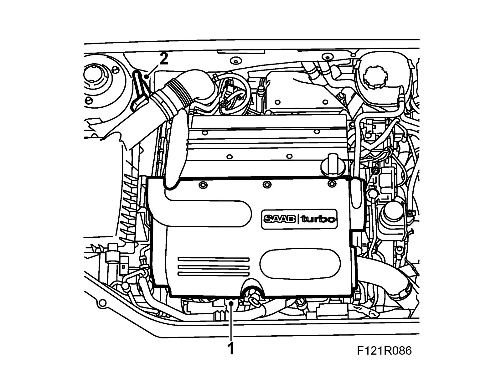
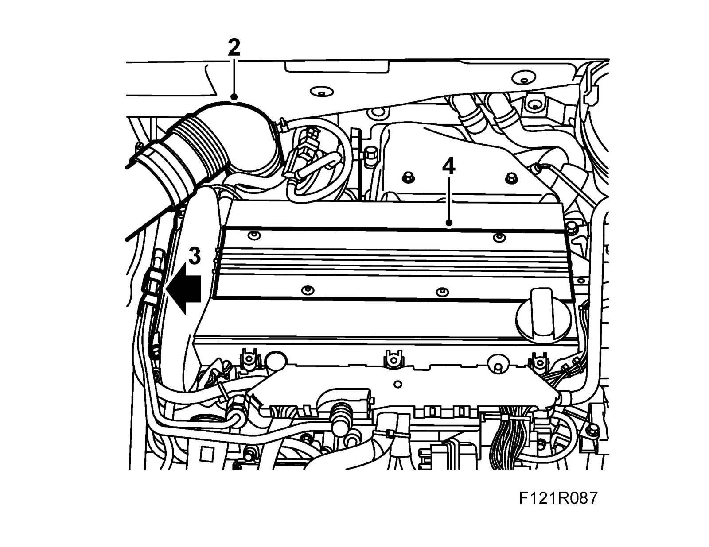
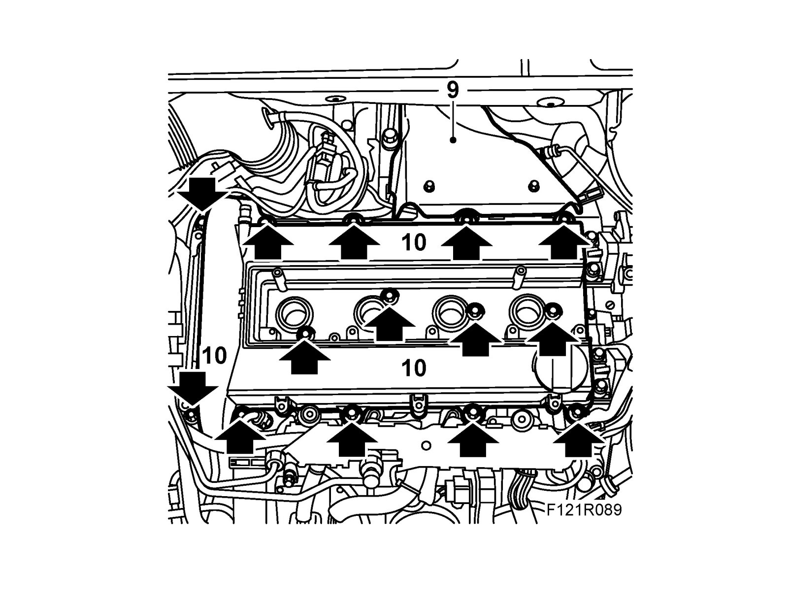
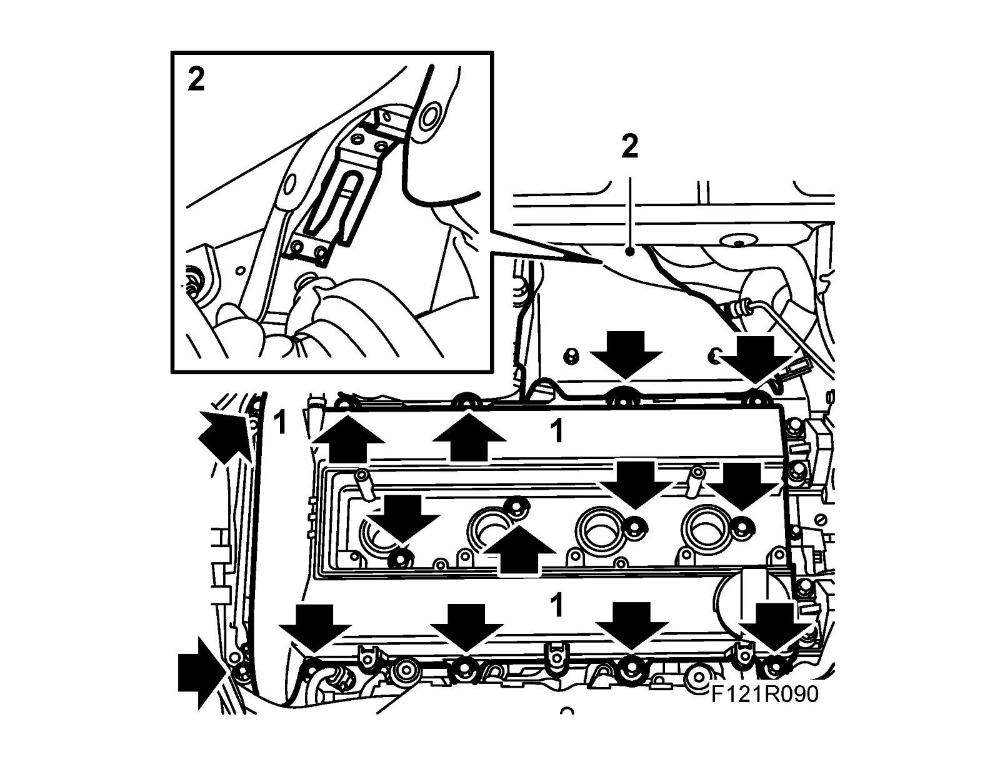
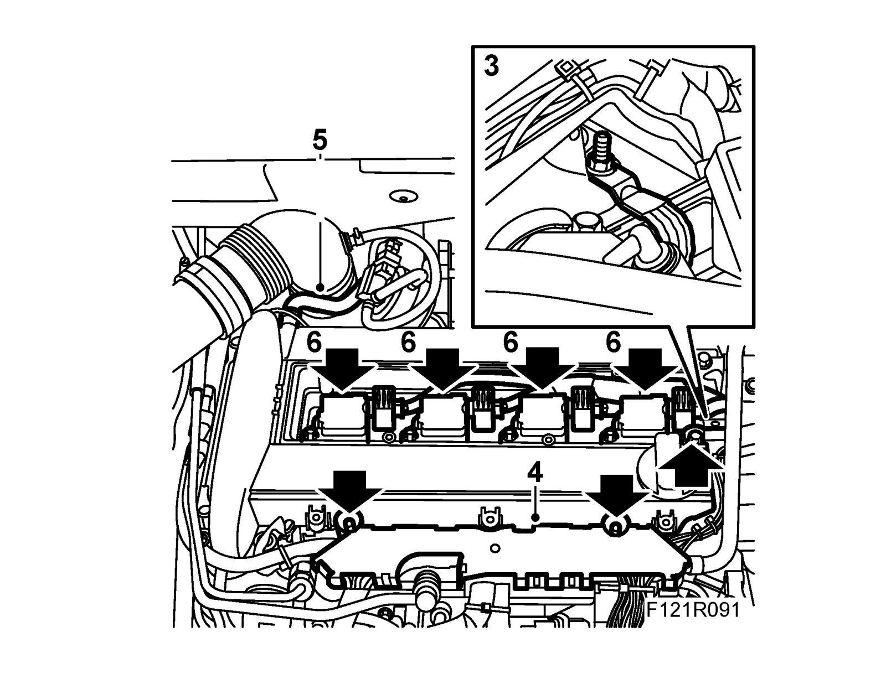
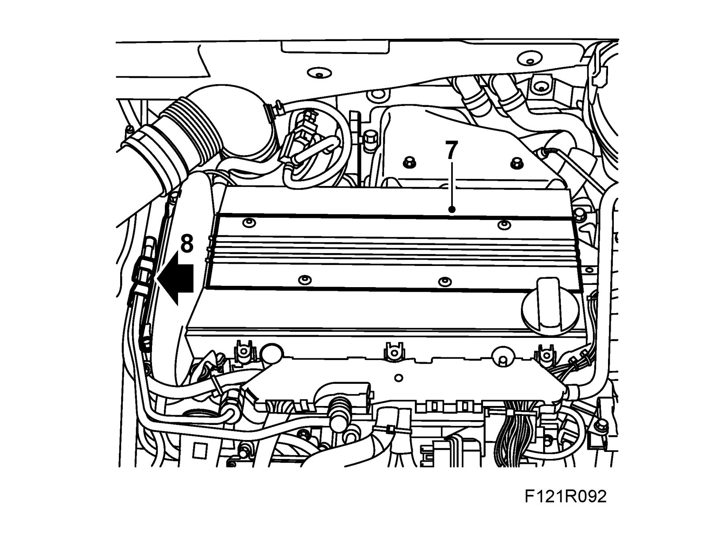
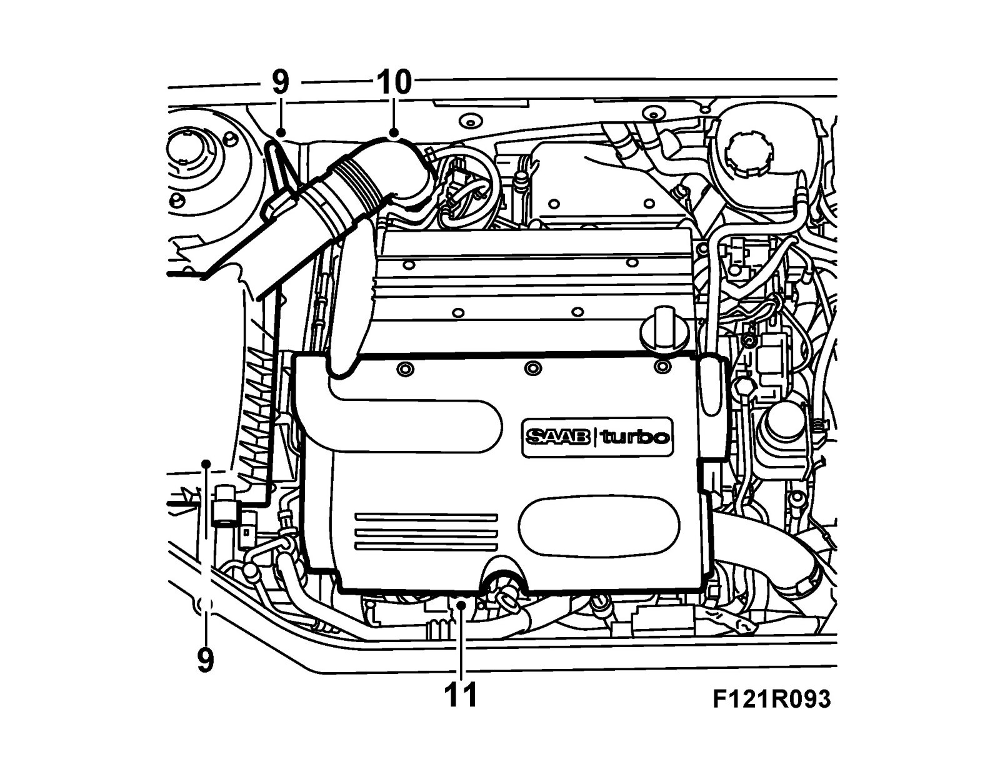

Valve Cover: Service and Repair
Camshaft cover with gasketTo remove
1. Remove the upper engine cover.

2. Release the mass air flow sensor connector. Detach the inlet hose and remove the filter casing. Remove the air filter.

3. Detach the fuel pipe from the snap fastening and remove the fastening bolts from the camshaft cover.
4. Remove the cover over the ignition coils.
5. Remove the bolts, lift up each ignition coil and move aside. Start with the ignition coil for cylinder 1.
6. Detach the crankcase ventilation hose from the camshaft cover.
7. Detach and carefully guide the cable duct out of the cylinder head and camshaft cover.
8. Detach the ground lead from the camshaft cover.
9. Remove the heat shield over the turbocharger.

10. Remove the camshaft cover.
11. Remove the camshaft cover gasket and seals around the spark plug holes.
To fit
1. Fit the camshaft cover with new gaskets for the bolts. Check that the gaskets remain in place during fitting.
Tightening torque 10 Nm (8 lbf ft)

2. Fit the heat shield over the turbocharger. Ensure that the clip under the heat shield is fastened to the holder.
3. Connect the ground cable to the camshaft cover.

4. Fit the cable duct on the camshaft cover.
5. Connect the crankcase ventilation hose to the camshaft cover.
6. Refit ignition coils. Start with the ignition coil for cyl. 4.
Tightening torque 8 Nm (6 lbf ft).
7. Fit the cover over the ignition coils.

8. Fit the bolts for the camshaft cover mounting and fit the fuel pipe in the snap fastening.
9. Refit the air filter and filter housing cover. Connect the mass air flow sensor connector.

10. Connect the inlet hose.
11. Fit the upper engine cover.